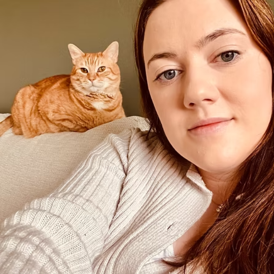

OUR APPROACH
We genuinely love spending time with your cats. Starting with a gentle approach, reassuring presence and building up trust. We always allow cats to approach us on their own terms. Some want to get straight to playtime and others just want to see that food going down first and that's okay with us! I adapt to make sure they are comfortable. My aim is to maintain their routine, minimise stress and give you peace of mind while you are away.

Hi, I’m Kira
The heart behind Feline Happy at Home. I love for all animals and have my own two crazy cats at home (one of which has certainly taught me a lot about cat anxiety!)
I know how difficult it can be to leave them behind when you are going away - even if you are heading off on holiday. My mission is to give your cats (or other small pets) the same love, care and patience you would so that you can relax in total peace of mind that I have it covered.
I always take a calm, gentle approach - allowing then to interact at their own pace. I also include as much play time as I can - especially for younger cats!
I understand how important it is to trust someone in your home with your pets. I treat every cat and home as if they were my own, ensuring they feel safe, comfortable, and cared for while you are away.
I will always come to meet you and your cats before your first booking so you can be safe in the knowledge I know everything there is to know about your home and cats (or small pets) before you leave them in my care.
I am fully Feline CPR & First Aid certified. Nothing is more important to me than your cats safety and well-being.
Can't wait to meet you!